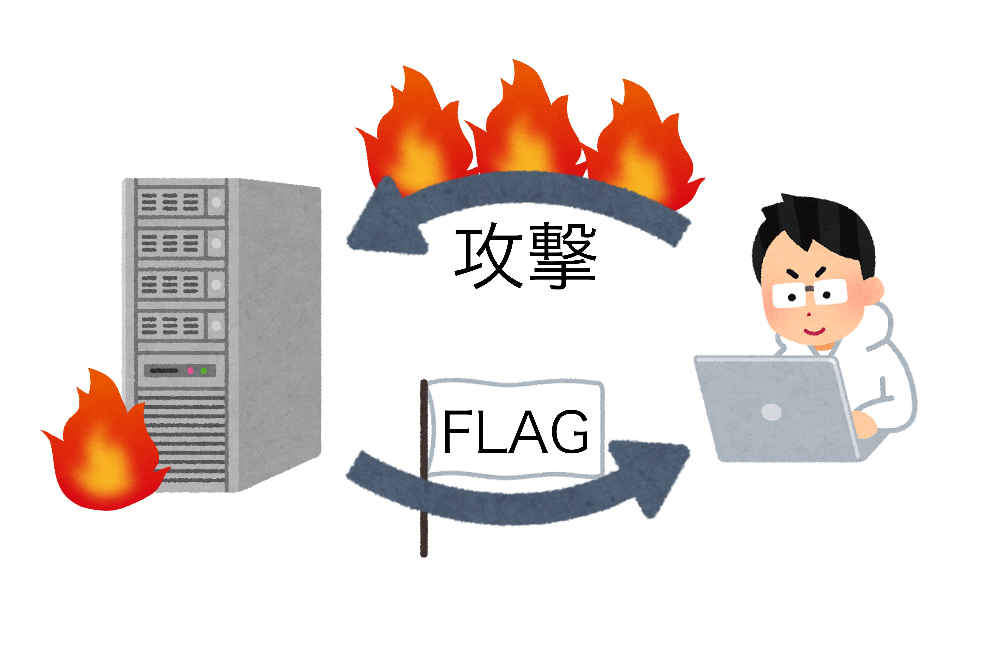
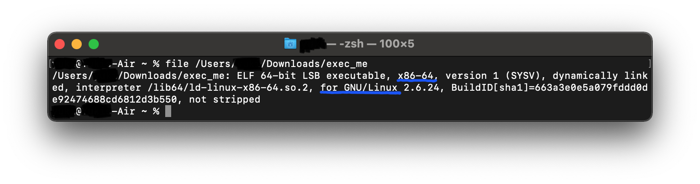
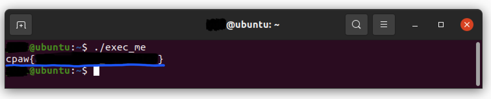

この記事は、ソフメアドベントカレンダー2020 15日目の記事です。
みなさん、こんにちは！
1回生P班の 32ba です。この記事では CTF(Capture The Flag) という競技が面白いので、紹介しようと思います。
Capture The Flag、略して CTF と呼ばれるこの競技は、コンピューターセキュリティーの知識を駆使して隠されたフラグを集める良いハッカー"のための競技です。
「"良いハッカー"のための競技」と書きましたが、CTFで実際にやることは 悪いハッカーのやっていること つまり、ハッキング です。
というのも、CTFは悪いハッカーの視点や攻撃手法を学ぶことで、自分の組むシステムに脆弱性を産まないようにすることや、ハッカーに見つかる前にバグを潰すなど、自分たちを守るために開催されています。
そんな感じで、CTFは『主催者があらかじめ用意した攻撃対象のサーバー、サービス、プログラムに対して攻撃をして、Flagをゲットする』というのが競技の基本形になっています。
それではCTFという競技がどんなものなのかを、実際に常設されている問題(CpawCTF)を使いながら紹介したいと思います。
CTFの中で行われる攻撃行為を一般のサーバー、サービス、プログラムに行うことは法律違反にとなる可能性があるので、十分に注意しましょう。
それでは早速問題を見ていきましょう。CpawCTFに登録、ログインして問題を見てみます。
[Crypto] Classical Cipher を例に問題を見てみます。以下は問題文の引用です。
暗号には大きく分けて、古典暗号と現代暗号の2種類があります。特に古典暗号では、古代ローマの軍事的指導者ガイウス・ユリウス・カエサル（英語読みでシーザー）が初めて使ったことから、名称がついたシーザー暗号が有名です。これは3文字分アルファベットをずらすという単一換字式暗号の一つです。次の暗号文は、このシーザー暗号を用いて暗号化しました。暗号文を解読してフラグを手にいれましょう。
問題文からわかる通り、上の暗号文はシーザー暗号[1]っぽいのでサクッと復号しちゃいましょう。
「シーザー暗号 復号」とかでGoogle検索するとか、手計算でも簡単に復号できます。
あともう1問、問題のタイプが違う [Reversing] Can you execute ? をやってみます。以下は問題文の引用です。
拡張子がないファイルを貰ってこのファイルを実行しろと言われたが、どうしたら実行出来るのだろうか。 この場合、UnixやLinuxのとあるコマンドを使ってファイルの種類を調べて、適切なOSで実行するのが一般的らしいが…
実行ファイルが与えられるのでこれを実行できればフラグが出てきそう。Linuxで file コマンドを使えばどのOS向けにコンパイルされたものか分かるので…

コマンドを実行するとLinuxで実行できそうなバイナリなので、Linuxで実行してみると…

フラグが出てきました！
一口にCTFと言ってもさまざまなタイプの問題があります。ここでは代表的な問題ジャンルを紹介したいと思います。
Crypto
暗号に関する問題です。
古典的な暗号(上であげたシーザー暗号など)や、より現代的な暗号を解読したりします。
Network
パケットのキャプチャを解析してフラグを見つける問題です。
ちょうどここに書いてあるような感じでパケットキャプチャが渡されるので解析する問題が多い感じです。
Reversing
与えられたプログラムの挙動を解析して、フラグを見つける問題です。
上でやった問題もReversingカテゴリの問題ですが、実際は実行しただけではフラグが出て来ない問題が多いので、逆コンパイルして挙動を解析したりするのが求められがち。
Pwn
サーバー上で動いているプログラムが与えられるので、それの脆弱性を見つけて、攻撃することでフラグを得る問題です。
Reversingの知識とか色々必要となるので、難しいジャンル。ハッカーという言葉で想像する感じをそのままやるのがこの Pwn と後述する Web だと思います。
Web
Webに関する、例えばWebブラウザや通信に使われるプロトコル、Webサーバーで動いているプログラムやDBなど、とりあえずWeb関連の知識が必要になるジャンルです。
Webブラウザだけで解ける問題も多く、敷居は低いですが、Web関連技術の知識がめっちゃ要求されるジャンル。
Forensics
さまざまなデータの中に隠されたフラグを探す問題です。
例えば、HDDやSSD、USBメモリなどのイメージファイルを解析して、削除されたファイルを復元することでフラグを得られる問題だったり、壊れた圧縮ファイルを解析して、フラグを得る問題などがあります。
PPC
プログラミングとアルゴリズムに関する問題です。
いわゆる競技プログラミングみたいな問題が出るジャンルです。
Misc
その他の問題がこのジャンルに分別されます。
例えば、「#!/bin/bash の !# は何と読む？」(こちらより引用) みたいな問題があります。
こんな感じで多くのジャンルの問題からCTFは構成されているので、競技としてのCTFでは4〜5人程度でチームを組んで参加するのが一般的です。[2]
今回取り上げた問題は初心者向けの問題でしたが、実際の競技で出てくる問題は、例えばバイナリを解析してフラグを探し当てたり、パケットキャプチャを分析してフラグを見つけたり、より高度な知識を組み合わせて問題を解く感じで、よりハッカーみが増して カッコいい 感じ(個人の感想)になります。
もしこの記事を読んでCTFに興味を持ってくれた人だったり、もう既にやってるよって人がいたら、Twitterとかに話しかけてくれるとめっちゃ喜びます。